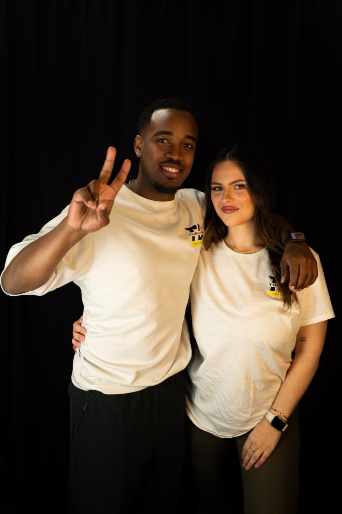

Pourquoi choisir un coach sportif ?
S'entraîner seul, c'est souvent répéter les mêmes exercices, sans savoir s'ils sont bien faits ni s'ils servent vraiment votre objectif. Un coach sportif vous fait gagner du temps et vous évite les blessures :
- Un programme construit pour vous, selon votre corps, votre niveau et votre emploi du temps.
- Une correction en direct de chaque mouvement, pour progresser en sécurité.
- Un suivi de vos progrès séance après séance, et des ajustements quand il le faut.
- La motivation : un rendez-vous fixe avec quelqu'un qui vous attend et vous pousse au bon moment.
Comment se passe un coaching ?
1. Le bilan
On commence par faire connaissance : vos objectifs, votre passé sportif, vos éventuelles douleurs ou blessures, votre rythme de vie. Le coach évalue votre condition physique pour partir de la bonne base.
2. Le programme
À partir du bilan, Aymar construit un programme sur mesure : renforcement, cardio, mobilité, travail technique… dans les proportions qui vous correspondent.
3. Les séances et le suivi
Chaque séance a lieu au studio, avec un coach rien que pour vous. Les exercices évoluent avec vos progrès, et on fait régulièrement le point sur vos résultats.
Votre coach : Aymar
Aymar est coach sportif et préparateur physique. Il construit vos séances, corrige chaque mouvement et adapte tout à votre corps et à votre objectif, de la remise en forme à la préparation d'une compétition. À ses côtés, Mélissa s'occupe de l'accueil, des plannings et de votre suivi administratif.

Les objectifs que nous accompagnons
Un entraînement efficace et durable, adapté à votre condition physique.
Un programme de musculation progressif et une technique irréprochable.
Reprendre le sport en sécurité après une blessure ou une longue pause.
Gagner en force, en vitesse et en endurance pour votre sport.
Préparer une course avec un plan structuré. Lire aussi : préparer son premier Hyrox.
Retrouver de l'énergie, de la mobilité et le plaisir de bouger.
Tarifs du coaching individuel
Tous les prix sont TTC :
- Séance à l'unité : 60 €
- Carte de 10 séances : 500 €, soit 50 € la séance
- Abonnement 2 coachings par semaine : 360 € par mois (engagement 6 mois)
- Formule mixte Essentiel : 1 coaching individuel + 2 cours collectifs par semaine, 230 € par mois (engagement 6 mois)
- Formule Premium : 2 coachings par semaine, seul ou à deux, + cours collectifs illimités, 390 € par mois (engagement 6 mois)
Envie de l'énergie du groupe ? Découvrez aussi nos cours collectifs en petit groupe.
Où ont lieu les séances ?
Toutes les séances ont lieu dans notre studio, au 2 rue Antoine de Saint-Exupéry, 87350 Panazol, à quelques minutes du centre de Limoges. Le studio accueille des personnes de Limoges, Panazol, Feytiat, Le Palais-sur-Vienne, Saint-Just-le-Martel et des environs.
Ouvrir l'itinéraire dans Google Maps →
Questions fréquentes
Combien coûte un coach sportif à Limoges ?
Chez Turagiye Coaching, une séance de coaching individuel coûte 60 €, ou 50 € avec la carte de 10 séances. L'abonnement 2 séances par semaine est à 360 € par mois.
Le coaching est-il adapté aux débutants ?
Oui, c'est même idéal pour débuter : le coach vous apprend les bons gestes dès le départ et adapte chaque séance à votre niveau.
Peut-on faire un coaching à deux ?
Oui, la formule Premium permet de partager les coachings individuels à deux personnes, avec les cours collectifs illimités en plus.
Comment réserver ?
En ligne sur Feelup, ou par téléphone au 05 19 87 82 63.